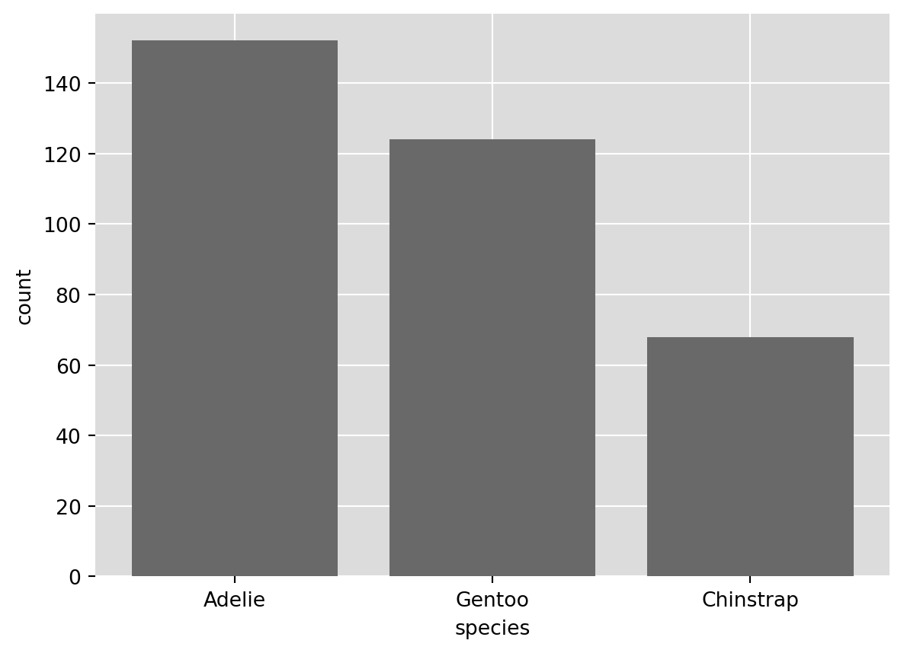
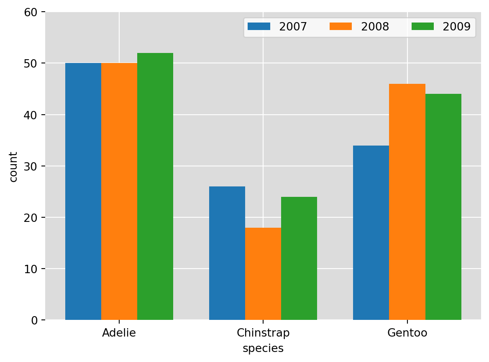
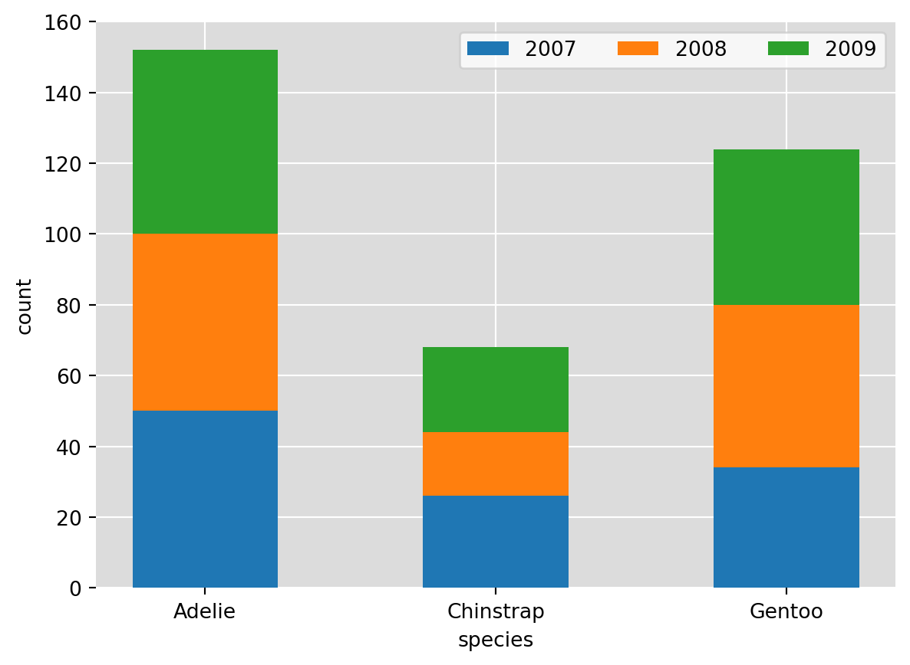
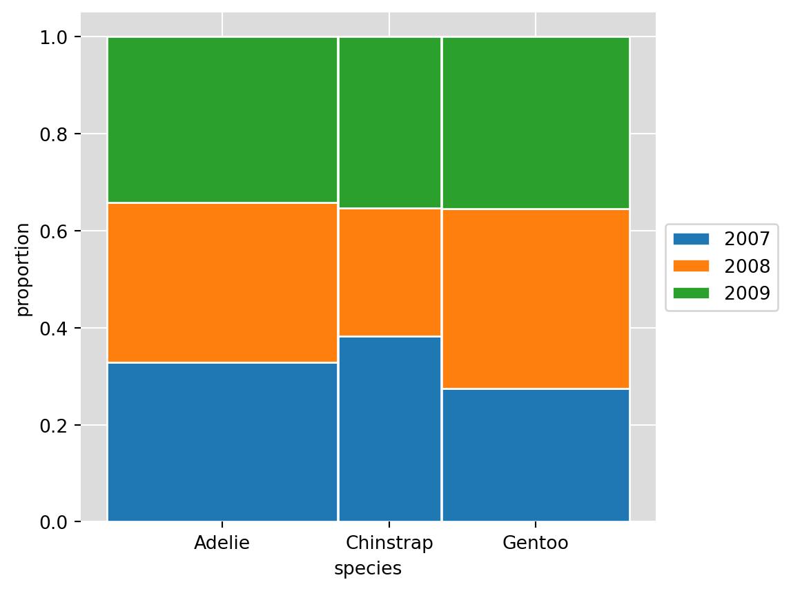
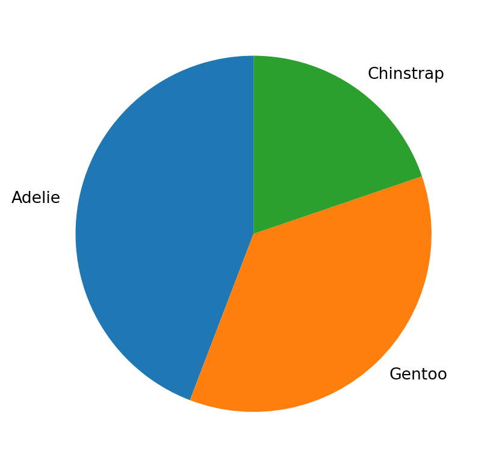
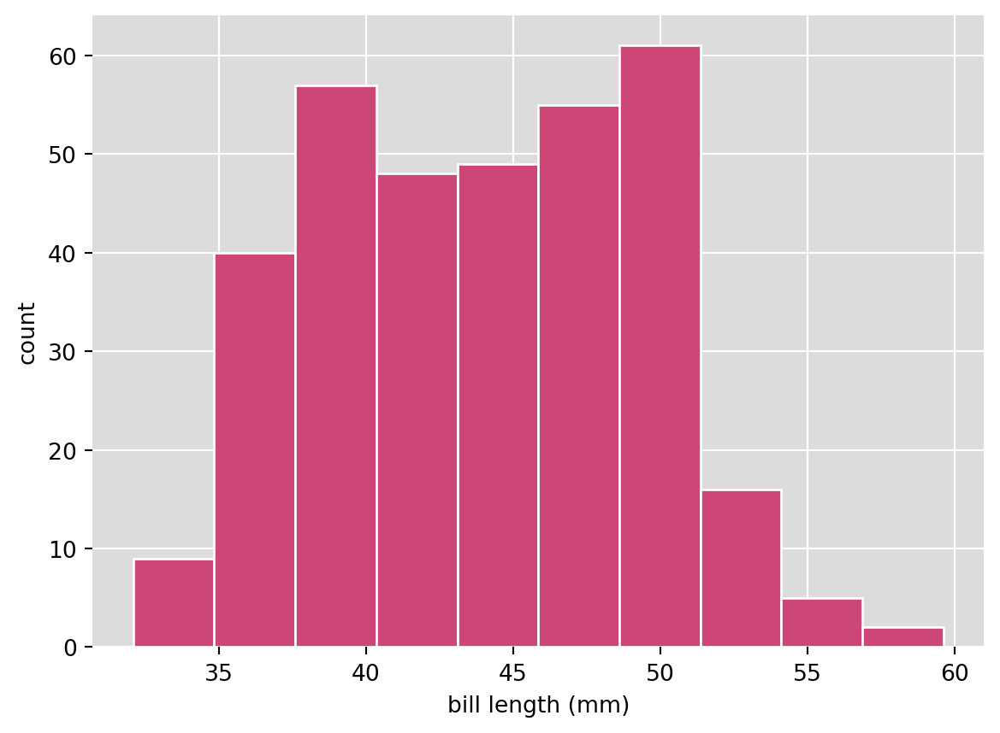
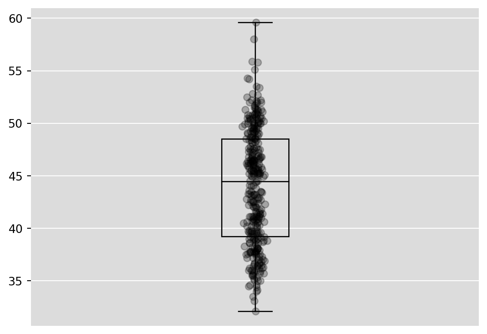

def ggplot2_defaults():
[s.set_visible(False) for s in ax.spines.values()]
# ax.spines['top'].set_visible(False)
# ax.spines['bottom'].set_visible(False)
# ax.spines['left'].set_visible(False)
# ax.spines['right'].set_visible(False)
ax.set_axisbelow(True) ## draws the grid below the bars
ax.grid(visible = True, color = "white") ## turns on grid and sets lines to white
plt.gca().patch.set_facecolor('gainsboro') ## sets grid fill colorA Guide to Visualizing Data with Matplotlib
Prerequisite
This guide assumes that you have Python 3 installed as well as the pandas, numpy, and matplotlib packages.
Setup
The python packages necessary for this guide are:
- pandas
- numpy
- matplotlib
- palmerpenguins
These can be installed via pip.
We’ll begin by loading these packages
import pandas as pd
import numpy as np
import matplotlib.pyplot as plt
from rdatasets import data
from palmerpenguins import load_penguinsand then reading in the data
penguins = load_penguins()
penguins.head()| species | island | bill_length_mm | bill_depth_mm | flipper_length_mm | body_mass_g | sex | year | |
|---|---|---|---|---|---|---|---|---|
| 0 | Adelie | Torgersen | 39.1 | 18.7 | 181.0 | 3750.0 | male | 2007 |
| 1 | Adelie | Torgersen | 39.5 | 17.4 | 186.0 | 3800.0 | female | 2007 |
| 2 | Adelie | Torgersen | 40.3 | 18.0 | 195.0 | 3250.0 | female | 2007 |
| 3 | Adelie | Torgersen | NaN | NaN | NaN | NaN | NaN | 2007 |
| 4 | Adelie | Torgersen | 36.7 | 19.3 | 193.0 | 3450.0 | female | 2007 |
Visualizations
Categorical Variables
Barchart
count_by_species = penguins.groupby("species").size()
fig, ax = plt.subplots()
ax.bar(x = count_by_species.index, height = count_by_species.values, color = "dimgray");
ax.set_ylabel("count")
ax.set_xlabel("species")
ggplot2_defaults()
## sort the bars
count_by_species.sort_values(ascending = False, inplace = True)
fig, ax = plt.subplots()
ax.bar(x = count_by_species.index, height = count_by_species.values, color = "dimgray");
ax.set_ylabel("count")
ax.set_xlabel("species")
ggplot2_defaults()
Side-by-Side Barchart
count_by_species_and_year = penguins.groupby(["species", "year"]).size()
count_by_species_and_year = count_by_species_and_year.reset_index()
count_by_species_and_year.rename(columns = {0:'value'}, inplace = True)
width = 0.25 # the width of the bars
x = np.arange(count_by_species_and_year["species"].nunique())
multiplier = 0
fig, ax = plt.subplots()
for yr in count_by_species_and_year["year"].unique():
ht = count_by_species_and_year[count_by_species_and_year["year"] == yr]["value"]
offset = width * multiplier
rects = ax.bar(x + offset, ht, width, label = yr)
multiplier += 1
ax.set_ylabel('count')
ax.set_xlabel('species')
ax.set_xticks(x + width, count_by_species_and_year["species"].unique())
ax.legend(ncols=3)
ax.set_ylim(0, 60)
ggplot2_defaults()
Stacked Barchart
width = 0.5
fig, ax = plt.subplots()
bottom = np.zeros(3)
for yr in count_by_species_and_year["year"].unique():
tmp = count_by_species_and_year[count_by_species_and_year["year"] == yr]
species = np.array(tmp["species"])
value = np.array(tmp["value"])
p = ax.bar(species, value, width, label=yr, bottom=bottom)
bottom += value
ax.set_ylabel('count')
ax.set_xlabel('species')
ax.set_xticks(count_by_species_and_year["species"].unique())
ax.legend(ncols=3)
ax.set_ylim(0, 160)
ggplot2_defaults()
Mosaic Plot
tot_by_grp = count_by_species_and_year.groupby(["species"])["value"].sum().reset_index()
tot_by_grp.rename(columns = {"value":"tot"}, inplace = True)
count_by_species_and_year = count_by_species_and_year.merge(tot_by_grp, on = "species", how = "left")
count_by_species_and_year["prop"] = count_by_species_and_year["value"] / count_by_species_and_year["tot"]
totals = count_by_species_and_year["tot"].unique()
scaled_totals = totals / totals.min()
width = scaled_totals
fig, ax = plt.subplots()
bottom = np.zeros(3)
species_loc = [0, (width[0]/2 + width[1]/2) + .005, (width[0]/2 + width[1] + .005 + width[2]/2) + .005]
for yr in count_by_species_and_year["year"].unique():
tmp = count_by_species_and_year[count_by_species_and_year["year"] == yr]
prop = np.array(tmp["prop"])
p = ax.bar(species_loc, prop, width, label=yr, bottom=bottom, edgecolor = "white")
bottom += np.array(tmp["prop"])
ax.set_ylabel('proportion')
ax.set_xlabel('species')
box = ax.get_position()
ax.set_position([box.x0, box.y0, box.width * 0.8, box.height])
ax.set_xticks(ticks = species_loc, labels = count_by_species_and_year["species"].unique())
ax.legend(ncol = 1, loc = "center left", bbox_to_anchor=(1, 0.5))
ggplot2_defaults()
Piecharts
fig, ax = plt.subplots()
ax.pie(x = count_by_species.values, labels = count_by_species.index, startangle = 90);
Numerical Variables
Histograms
fig, ax = plt.subplots()
ax.hist(penguins["bill_length_mm"], edgecolor = "white", color = "#cc4778");
ax.set_ylabel('count')
ax.set_xlabel('bill length (mm)')
ggplot2_defaults()
Boxplots
fig, ax = plt.subplots()
ax.boxplot(penguins["bill_length_mm"].dropna(),
patch_artist = True,
medianprops = {"color": "black"},
boxprops = {"facecolor": "white"})
plt.xticks([]);
ggplot2_defaults()
Boxplot with points
fig, ax = plt.subplots()
n = len(penguins["bill_length_mm"].dropna())
ax.boxplot(penguins["bill_length_mm"].dropna(),
patch_artist = True,
medianprops = {"color": "black"},
boxprops = {"fill": None})
ax.scatter(y = penguins["bill_length_mm"].dropna(), x = [1] * n + np.random.normal(size = n, scale = 1/100), color = "black", alpha = 1/4)
plt.xticks([]);
ggplot2_defaults()